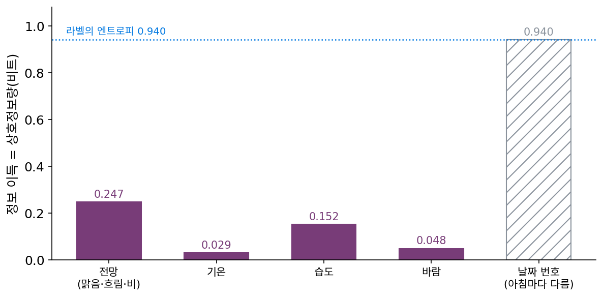
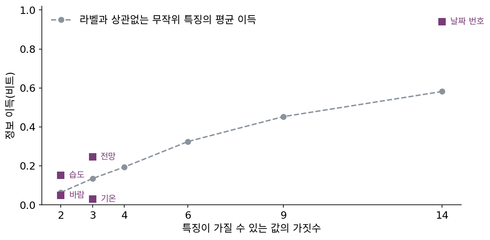
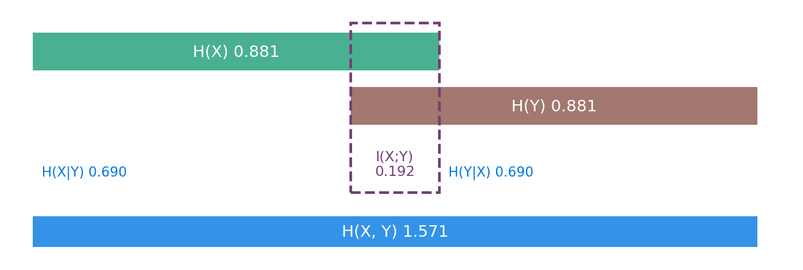
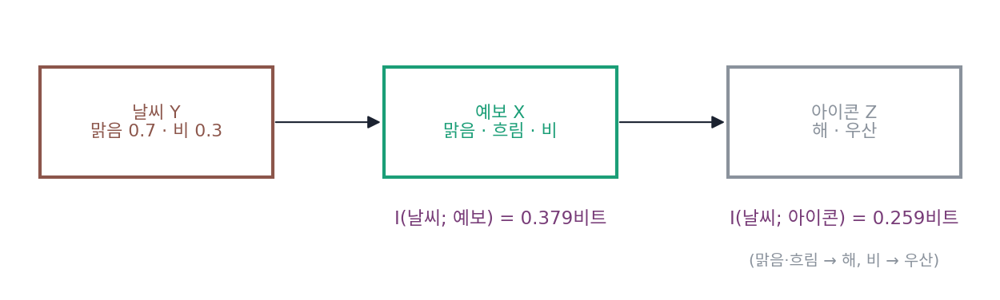
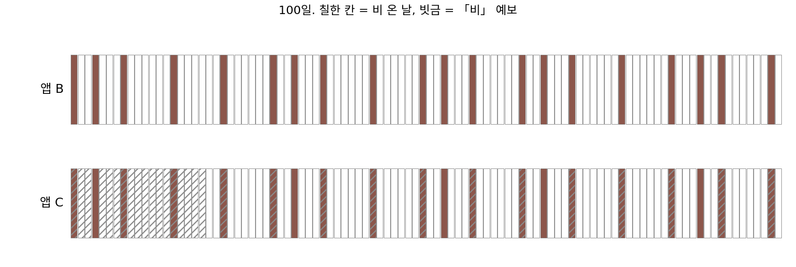
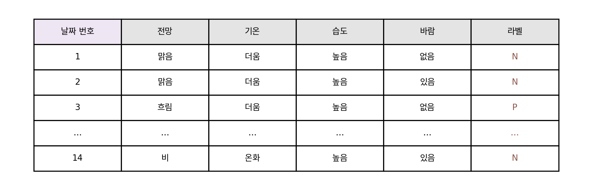
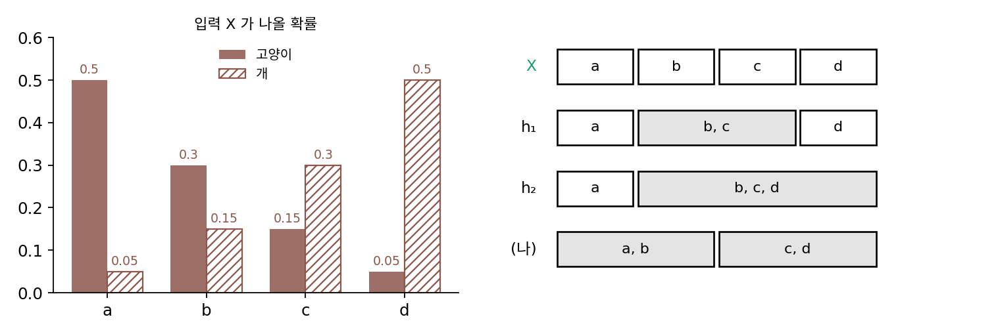

상호정보량: 관측이 평균으로 덜어 준 비트
날씨 짝 100쌍에서 오늘 날씨를 알면 내일 날씨에 드는 비트가 평균 0.881에서 0.690으로 줄었다. 줄어든 0.192비트는 오늘 날씨가 내일 날씨에 대해 알려 준 양이다. 휴대폰에 날씨 앱이 둘 있는데 하나만 남기려 한다면, 어느 앱이 비에 대해 더 많이 알려 주는지를 이런 숫자 하나로 견줄 수 있을까? 그리고 「예보를 보고 날씨를 짐작하는」 쪽에서 잰 값과 「날씨를 알고 예보를 짐작하는」 쪽에서 잰 값은 같을까?
역사: 체스 끝내기에서 나온 정보 이득
1970년대 말 영국의 인공지능 연구자 미치(Donald Michie)는 오스트레일리아 출신의 퀸런(J. Ross Quinlan)에게 어려운 과제를 내놓았다. 체스에서 킹과 룩을 가진 쪽과 킹과 나이트를 가진 쪽만 남은 끝내기 국면을, 말의 배치에서 뽑은 특징만 보고 「나이트 쪽이 몇 수 안에 지는가」로 가르는 규칙을 자료에서 찾아내라는 것이었다. 퀸런은 질문 하나로 국면들을 갈라 가며 나무를 키우는 프로그램을 만들었고, 문제는 어느 특징으로 먼저 가를지를 정하는 기준이었다. 1986년 『Machine Learning』 창간호에 실린 「결정 트리의 귀납(Induction of Decision Trees)」에 따르면, ID 계열의 첫 프로그램들은 「감으로 정한」 평가 함수를 썼고 그럭저럭 통했다. 셋째 판 ID3은 페테르 가치(Peter Gács)의 제안을 따라 정보에 바탕을 둔 기준으로 바꾸었다. 가르기 전 라벨의 엔트로피에서 가른 뒤 가지들의 평균 엔트로피를 뺀 값, 곧 정보 이득이 가장 큰 특징을 고르는 것이다.
논문은 날씨로 정하는 「토요일 아침」 14개를 예로 들었다. 라벨은 어떤 바깥 활동에 맞는 아침(P) 9개와 아닌 아침(N) 5개라 엔트로피가 0.940비트이고, 전망(맑음·흐림·비)으로 가르면 정보 이득이 0.246비트로 기온 0.029, 습도 0.151, 바람 0.048보다 커서 전망이 뿌리에 온다. 퀸런은 각주에서 이 이득을 최대로 하는 일이 그 특징과 라벨 사이의 상호정보량을 최대로 하는 일이라고 밝혔다. 그런데 써 보니 함정이 있었다. 류블랴나의 브라트코 연구진이 의료 자료에 썼을 때 정보 이득은 값의 범위가 아홉 개인 「환자의 나이」를 골랐는데, 전문의들은 다른 특징이 더 중요하다고 보았다. 값이 많은 특징일수록 이득이 커지는 쪽으로 기울고, 아침마다 다른 날짜 번호처럼 라벨과 아무 상관이 없는 특징도 이득이 가장 크게 나왔다. 퀸런은 이득을 「그 특징의 값을 묻는 질문 자체의 정보」로 나눈 이득 비를 내놓았고, 그 비가 분모가 아주 작은 특징으로 쏠리지 않도록 이득이 평균 이상인 특징 가운데서만 고르게 했다.



날짜 번호가 이득이 가장 크다는 건 당연한데요. 아침마다 번호가 다르니까 번호로 가르면 가지마다 아침이 하나씩이라 엔트로피가 다 0이잖아요.

지금 보면 그렇죠. 그런데 그때 연구자들이 처음 이상하다고 느낀 건 날짜 번호가 아니라 「환자의 나이」였어요. 나이는 의미가 있는 특징이잖아요. 무엇이 잘못됐을까요?

나이를 아홉 칸으로 나누면 칸마다 환자가 적어지니까, 우연히 한쪽 라벨만 몰린 칸이 생기기 쉬워요. 그러면 실제로는 별 상관이 없어도 이득이 커 보이고요.

그래서 퀸런은 정보 이득을 그대로 쓰지 않고 고쳤어요. 이득을 무엇으로 나눴는지 보면, 그 함정이 어디서 오는지도 보여요.
「값을 묻는 질문 자체의 정보」로 나눴다고 했죠. 날짜 번호를 물으면 열네 가지 가운데 하나라 log₂ 14 = 3.81비트나 알려 주는데, 그 가운데 라벨에 쓰이는 건 0.940뿐이에요. 묻는 데 드는 비트에 비해 라벨에 쓰이는 비트가 얼마냐를 본 거네요.
그런데 계산해 보니 날짜 번호의 이득 비가 0.247이고 전망은 0.156이에요. 나눠도 여전히 날짜 번호가 이기는데요?
잘 봤어요. 그래서 퀸런은 이득이 평균 이상인 특징 가운데서만 이득 비를 견주게 하는 조건을 하나 더 달았어요. 이 작은 자료에서는 그것도 날짜 번호를 막지 못하죠. 자료 하나하나에 붙은 이름표처럼 학습 자료에서만 라벨을 다 맞히는 특징을 거르려면, 결국 처음 보는 자료에서 확인해야 해요. 그 이야기는 뒤로 미루고, 이득이 재는 양부터 날씨 짝으로 손에 익혀 봐요.
같은 0.192비트를 세 번 세기
날씨 짝 100쌍(맑음–맑음 60, 맑음–비 10, 비–맑음 10, 비–비 20)으로 돌아가자. 내일 날씨의 엔트로피는 0.881비트이고, 오늘을 안 뒤 남은 조건부 엔트로피는 0.690비트였으니 줄어든 양은 0.192비트다. 방향을 바꿔 내일을 먼저 알고 오늘을 짐작해도, 이 표는 오늘과 내일의 비율이 같아 0.881 − 0.690 = 0.192비트가 나온다.
셋째 방법은 표를 통째로 보는 것이다. 오늘과 내일이 서로 아무 상관이 없다면 짝의 확률은 두 비율을 곱한 값이어야 하므로, 맑음–맑음은 0.7 × 0.7 = 0.49, 맑음–비와 비–맑음은 0.21, 비–비는 0.09가 된다. 실제 표가 이 「서로 모르는 세계」의 표에서 얼마나 떨어져 있는지 KL로 재면 다시 0.192비트다. 실제 짝을 「서로 모른다」고 믿고 적으면 짝 하나에 0.192비트를 더 쓴다는 뜻이고, 짝으로 함께 적으면 그만큼 아낀다는 뜻이다. 100쌍이면 19.2비트다(sources/entropy/s5_mutual.py).
세 계산이 모두 재는 이 양을 상호정보량 (한 변수를 알면 다른 변수에 덜 드는 평균 비트, mutual information)이라 한다. 어느 방향에서 재도 같다.

막대 그림으로 보면 세 꼴이 왜 같은지 보인다. 내일의 막대에서 오늘을 안 뒤에도 남는 부분을 빼면 겹친 길이가 남고, 두 막대 길이의 합에서 둘을 합친 막대를 빼도 겹친 길이가 남는다. 겹친 길이는 0보다 짧을 수 없고, 두 변수가 서로 아무 상관이 없을 때만 0이다. 내일 날씨가 오늘 날씨로 완전히 정해진다면 겹친 길이가 내일 막대 전부, 곧 I = H(Y)가 된다.
관측을 가공하면 상호정보량은 어떻게 될까? 예보 앱이 날씨 Y에 대해 「맑음」「흐림」「비」 셋 가운데 하나를 내는데(맑은 날에는 0.7, 0.25, 0.05, 비 온 날에는 0.05, 0.35, 0.6의 확률로), 휴대폰 화면의 작은 아이콘은 맑음과 흐림을 해로, 비를 우산으로 바꿔 보여 준다고 하자. 날씨와 예보 사이의 상호정보량은 0.379비트인데, 날씨와 아이콘 사이는 0.259비트로 준다. 아이콘은 예보만 보고 만들어지므로 예보에 없는 날씨 정보를 새로 얻을 길이 없기 때문이다. Y → X → Z처럼 Z가 X만 보고 만들어지면 I(Y; Z) ≤ I(Y; X)라는 이 결과를 데이터 처리 부등식이라 부른다. 가공은 정보를 지키거나 버릴 뿐 늘리지 못한다. 흐림을 우산 쪽으로 묶었다면 0.297비트가 남으니, 어떻게 묶느냐에 따라 버리는 양은 달라진다.

ML에서: 정보 이득과 정보 병목
결정 트리의 정보 이득은 「한 마디에 모인 자료 하나가 어느 가지로 가는가」와 「그 자료의 라벨」 사이의 상호정보량이다. 가르기 전 라벨 엔트로피에서 가지들의 평균 엔트로피를 빼는 셈이 상호정보량의 첫째 꼴 H(Y) − H(Y∣X)와 같고, 랜덤 포레스트나 그래디언트 부스팅의 나무들도 이 셈(또는 그와 닮은 지니 불순도)으로 가지를 고른다. 특징을 고를 때 라벨과의 상호정보량이 큰 특징부터 고르는 방법도 같은 생각이다.
데이터 처리 부등식은 신경망의 층을 읽는 눈도 준다. 입력 X를 층마다 가공해 표현을 만들면, 어느 층의 표현도 라벨에 대해 입력이 가진 것보다 더 많이 알 수는 없다(그런데도 층을 왜 쌓는지는 문제 14). 그렇다면 라벨에 쓸모 있는 비트는 남기고 나머지는 버리는 표현이 좋은 표현이 아니냐는 생각이 나오는데, 이 생각을 식으로 세운 것이 정보 병목이다. 무엇을 버려도 되는지를 비트로 따지는 일은 레이트–디스토션에서 본격적으로 다룬다.
문제 12. 적중률이 같은 두 앱
비가 다섯 날에 한 번(확률 0.2) 오는 동네에서, 앱 B는 날마다 「맑음」이라고만 한다. 앱 C는 100일 가운데 30일 「비」라고 했고, 그 30일 가운데 15일에 실제로 비가 왔으며, 「맑음」이라고 한 70일 가운데 비가 온 날은 5일이다. (가) 두 앱의 적중률(예보가 맞은 날의 비율)을 구하라. (나) 두 앱의 상호정보량 I(예보; 날씨)를 비트로 구하라. (다) 우산을 챙길지 정하는 데 어느 앱을 남기겠는가?

(가)는 둘 다 0.8이에요. B는 맑은 80일을 다 맞히고, C는 「맑음」이라 하고 맑았던 65일과 「비」라 하고 비 온 15일을 더해 80일이요.
적중률이 같으니까 아무거나 남겨도 되겠네.
앱 B를 지우고 냉장고에 「내일 맑음」이라고 적은 쪽지를 붙여 두면 뭐가 달라져요?
아무것도요. B는 그 쪽지랑 같네요. 날씨를 하나도 안 보고도 80%가 나와요. 이 동네가 원래 다섯 날 가운데 나흘은 맑으니까요. 적중률이 같다고 아무거나 남겨도 된다고 한 건 성급했어요.
그러면 (나)에서 B는 0이어야 해. 예보가 늘 같으니까 예보를 본 뒤에도 날씨의 엔트로피가 처음 그대로 0.722비트야. C는 「맑음」이라고 한 날 비 올 확률이 5/70 = 0.071이라 엔트로피 0.371, 「비」라고 한 날은 반반이라 1비트.
그런데 「비」라고 한 날은 1비트로 처음 0.722보다 커요. C가 오히려 더 헷갈리게 하는 거 아니에요?
그날 하루만 보면 그래요. 예보를 보기 전에, 두 예보가 나올 확률로 평균을 내면요?

0.7 × 0.371 + 0.3 × 1 = 0.560비트요. 처음 0.722에서 0.162비트 줄었어요. 「맑음」이라고 한 날이 훨씬 많고, 그날들에 엔트로피가 크게 내려갔으니까 평균은 줄어요.
(다)는 C예요. 적중률은 같아도 C는 비에 대해 0.162비트를 알려 주고, B는 0이에요. 적중률은 이 동네가 원래 맑다는 사실까지 앱의 공으로 쳐 주네요.
시험 문제 답이 거의 다 ③인 과목에서 다 ③으로 찍은 친구가 80점 받은 거랑 같아요. 점수는 높아도 그 과목을 하나도 모르는 거죠.
문제 13. 날짜 번호로 가르는 결정 트리
퀸런의 토요일 아침 14개(P 9, N 5)에 아침마다 다른 「날짜 번호」를 특징으로 더했다. (가) 날짜 번호로 가른 뒤 가지들의 평균 엔트로피와 정보 이득은? 전망의 이득 0.247비트와 견주어라. (나) 날짜 번호와 라벨 사이의 상호정보량은 이 14개 안에서 얼마인가? 그 값을 믿고 새 토요일의 라벨을 날짜 번호로 맞힐 수 있는가? (다) 상호정보량을 표에서 세어 쓸 때 무엇을 조심해야 하는가?

(가)는 날짜 번호마다 아침이 하나라 가지마다 엔트로피가 0이에요. 평균도 0이니까 이득은 0.940 − 0 = 0.940비트. 전망 0.247의 네 배 가까워요.
그 0.940은 라벨에 대해 얼마나 알려 준 거예요?
라벨의 엔트로피가 0.940이니까 전부요. 표에서 센 상호정보량으로는 날짜 번호가 라벨을 완전히 정해요. (나)도 0.940비트예요.
다음 주 토요일의 날짜 번호는 15번이에요. 15번 가지는 무엇이라고 답할까요?

15번 가지는 없어요… 학습한 14개 번호 어디에도 안 걸리니까 답을 못 하네요. 0.940비트를 알려 준다더니 새 아침에는 0비트예요.

표에서 센 상호정보량은 그 열네 개를 짝지은 결과를 그대로 센 거라서, 값의 가짓수가 자료 수만큼 많으면 아무 상관이 없어도 라벨을 다 정하는 것처럼 나오는구나. 칸마다 자료가 하나뿐이면 엔트로피가 0으로 세어지니까.

그래요. (다)의 답이 그거예요. 표에서 세는 상호정보량은 값의 가짓수에 비해 자료가 충분할 때만 믿을 수 있고, 가짓수가 많으면 위로 부풀어요. 섀넌이 세 글자 묶음의 엔트로피를 덜 믿었던 것과 같은 이야기예요. 그래서 실제로는 처음 보는 자료로 따로 확인하거나, 가짓수가 많은 특징을 깎아 주는 이득 비 같은 장치를 써요.
출석부 번호로 시험 성적을 「예측」하는 거랑 같네요. 우리 반에서는 번호만 알면 성적을 다 맞히지만, 다른 반에 가면 아무 쓸모가 없어요.
문제 14. 층을 지날수록
고양이 사진과 개 사진이 반반이다. 입력 X는 네 가지 모양 a, b, c, d 가운데 하나로 나오는데, 고양이일 때 (0.5, 0.3, 0.15, 0.05), 개일 때 (0.05, 0.15, 0.3, 0.5)의 확률로 나온다. 첫 층은 b와 c를 같은 값으로 보내고(h₁ = a, {b, c}, d), 다음 층은 거기서 {b, c}와 d를 다시 합친다(h₂ = a, {b, c, d}). (가) 라벨 Y에 대한 상호정보량 I(Y; X), I(Y; h₁), I(Y; h₂)를 비트로 구하라. (나) 첫 층을 바꿔 a와 b, c와 d를 합치면 상호정보량과, 그 표현만 보고 라벨을 가장 잘 맞힐 확률은 어떻게 되는가? X 그대로일 때와 비교하라. (다) 층이 라벨에 대한 비트를 늘리지 못한다면, 신경망은 왜 층을 쌓는가?

(가)는 0.3450, 0.3083, 0.2053비트예요. 층을 지날 때마다 줄어요. 예보 앱의 아이콘도 예보보다 날씨를 덜 알려 줬죠(sources/entropy/s5_mutual.py).
(나)는 a와 b, c와 d를 합치면 0.2781이에요. 그 표현만 보고 더 그럴듯한 쪽을 고르면 맞힐 확률은 0.800이고, X 그대로 봐도 0.800, h₁은 0.725예요.
상호정보량은 h₁보다도 작은데, 맞힐 확률은 X 그대로랑 같아요.
a와 b는 둘 다 고양이 쪽, c와 d는 둘 다 개 쪽이라, 합쳐도 어느 쪽인지는 그대로 남아. 버린 건 「얼마나 확실한가」야. a면 고양이일 확률이 0.91인데 b면 0.67이었거든. 맞힐 확률은 0.91과 0.67의 차이를 안 보지만 상호정보량은 봐.
그럼 (다)는요? 층이 비트를 새로 만들지 못하는데도 왜 층을 쌓아요?
만들지 못하면 입력을 바로 마지막 분류기에 넣는 게 가장 좋은 거 아니에요? 입력의 상호정보량이 가장 크니까요.
사진 한 장의 픽셀 값을 그대로 직선 하나로 가르는 분류기에 넣으면 고양이와 개를 잘 가를까요? 픽셀 안에 라벨에 대한 비트가 다 있는데도요.
못 가르죠. 정보가 들어 있는 것과 직선 하나로 읽어 낼 수 있는 것은 다르네요. 층은 비트를 새로 만드는 게 아니라, 라벨과 상관없는 것을 버리고 남은 것을 마지막 층이 읽기 쉬운 모양으로 다시 늘어놓는 거고요. (나)의 표현처럼 잘 버리면 맞히는 데는 손해가 없고요.
요리 재료 손질이랑 비슷하네요. 껍질을 벗기고 썬다고 재료가 늘지는 않는데, 바로 팬에 넣을 수 있는 모양이 되잖아요.